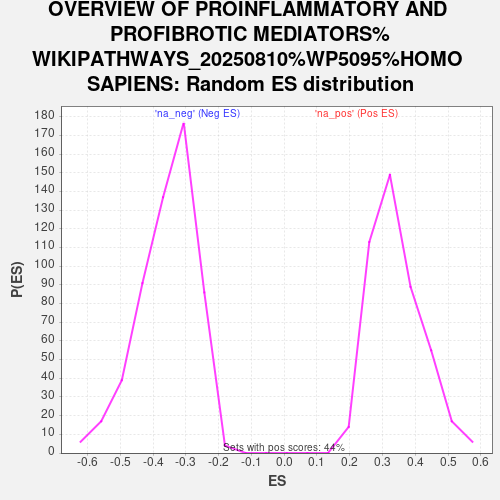

Profile of the Running ES Score & Positions of GeneSet Members on the Rank Ordered List
| Dataset | Combo_vs_Naive_Ranked_Genes |
| Phenotype | NoPhenotypeAvailable |
| Upregulated in class | na_pos |
| GeneSet | OVERVIEW OF PROINFLAMMATORY AND PROFIBROTIC MEDIATORS%WIKIPATHWAYS_20250810%WP5095%HOMO SAPIENS |
| Enrichment Score (ES) | 0.70578873 |
| Normalized Enrichment Score (NES) | 2.0666013 |
| Nominal p-value | 0.0 |
| FDR q-value | 0.0018272941 |
| FWER p-Value | 0.032 |
| SYMBOL | RANK IN GENE LIST | RANK METRIC SCORE | RUNNING ES | CORE ENRICHMENT | |
|---|---|---|---|---|---|
| 1 | CXCL8 | 53 | 26.441 | 0.0982 | Yes |
| 2 | LIF | 142 | 22.851 | 0.1805 | Yes |
| 3 | CX3CL1 | 216 | 21.144 | 0.2571 | Yes |
| 4 | CSF1 | 478 | 16.831 | 0.3050 | Yes |
| 5 | IL1B | 506 | 16.473 | 0.3666 | Yes |
| 6 | CXCL2 | 846 | 13.392 | 0.3964 | Yes |
| 7 | CXCL3 | 849 | 13.373 | 0.4477 | Yes |
| 8 | CCL2 | 997 | 12.286 | 0.4855 | Yes |
| 9 | IL1A | 1117 | 11.510 | 0.5221 | Yes |
| 10 | CXCL12 | 1181 | 11.160 | 0.5609 | Yes |
| 11 | CXCL5 | 1421 | 9.818 | 0.5834 | Yes |
| 12 | IL6 | 1521 | 9.412 | 0.6132 | Yes |
| 13 | TGFB1 | 1589 | 9.090 | 0.6439 | Yes |
| 14 | IL11 | 1664 | 8.718 | 0.6726 | Yes |
| 15 | CXCL11 | 1969 | 7.675 | 0.6826 | Yes |
| 16 | CCL20 | 2050 | 7.354 | 0.7058 | Yes |
| 17 | EBI3 | 3204 | 4.469 | 0.6491 | No |
| 18 | IL23A | 3662 | 3.617 | 0.6337 | No |
| 19 | CCL24 | 3671 | 3.601 | 0.6470 | No |
| 20 | CXCL14 | 4259 | 2.741 | 0.6199 | No |
| 21 | VEGFA | 4622 | 2.290 | 0.6055 | No |
| 22 | IL7 | 4936 | 1.956 | 0.5929 | No |
| 23 | IL12A | 5932 | 1.062 | 0.5332 | No |
| 24 | NFKB1 | 6288 | 0.806 | 0.5136 | No |
| 25 | IL17D | 6374 | 0.750 | 0.5110 | No |
| 26 | TNFSF13 | 6411 | 0.726 | 0.5115 | No |
| 27 | CCL26 | 6657 | 0.591 | 0.4981 | No |
| 28 | TSLP | 8184 | -0.060 | 0.4005 | No |
| 29 | IL15 | 8331 | -0.109 | 0.3915 | No |
| 30 | CXCL16 | 10481 | -1.645 | 0.2601 | No |
| 31 | SPP1 | 15270 | -18.173 | 0.0230 | No |
